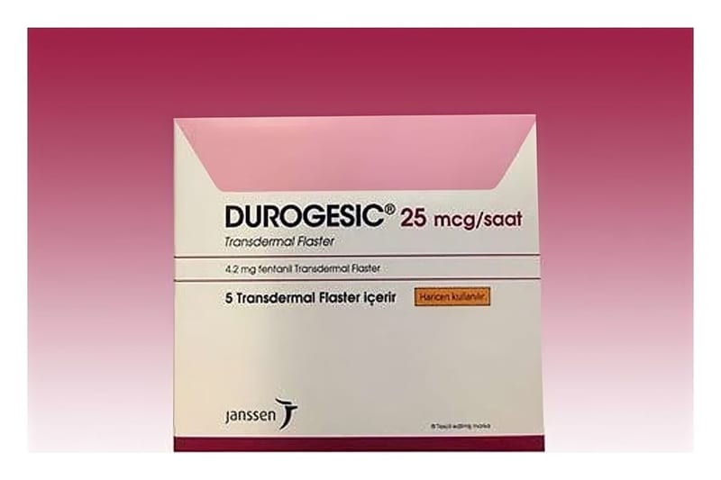

Durogesic 25 mcg mcg/saat Transdermal Flaster, 5 Adet

Ne için kullanılır
KT · Bölüm 1 DUROGESIC, üzerinde 25 mcg fentanil/sa yazan, kırmızıbaskı mürekkebi ile sınırı bulunan, yuvarlak köşeli, yarı saydam, dikdörtgen şeklindetransdermal bir flasterdir. Sürekli ağrı tedavisine ihtiyacı olan yetişkinve halihazırda opioid ilaç kullanan ve sürekli ağrı tedavisine ihtiyacı olan 2 yaşından büyük çocuklarda şiddetli ve uzun süreli ağrıların giderilmesine yardımcı olur. DUROGESIC 25 mikrogram/saat transdermal flasterlerin her biri etkin madde olarak 4,2 mg fentanil içerir. DUROGESIC güçlü ağrı kesiciler olan opioidler olarak adlandırılan bir ilaç grubuna dahildir. DUROGESIC flaster; üzerinde ürün ismi, dozajı ve renkli mürekkep ile sınırı bulunan, yuvarlak köşeli yarı saydam, dikdörtgen şeklinde bir üründür. Flaster deriye yapıştırılabilmesi için yapışkan biryüzeye sahiptir. Flasterler tek tek sarılmış ısı ile yalıtılmış (akrilonitril film) poşetlerde ve genellikle beş flaster içeren karton kutuda sunulur; fakat doktorunuz sizin için en uygun flaster sayısını ve dozunu reçete edecektir.